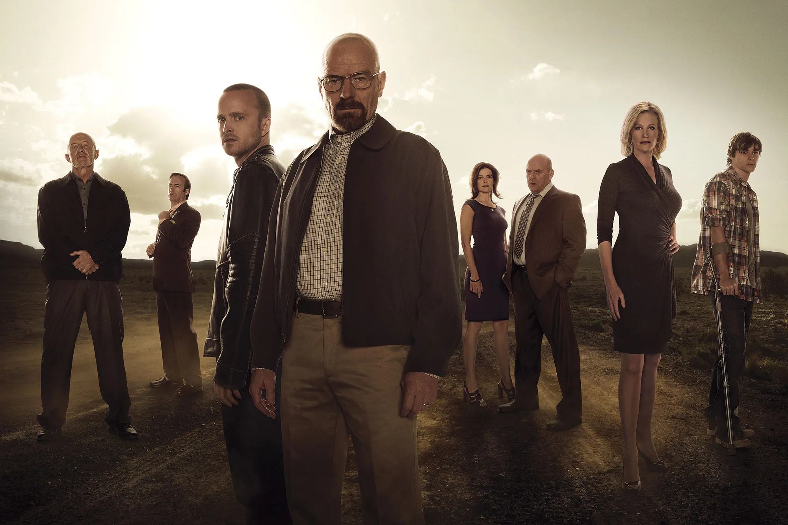
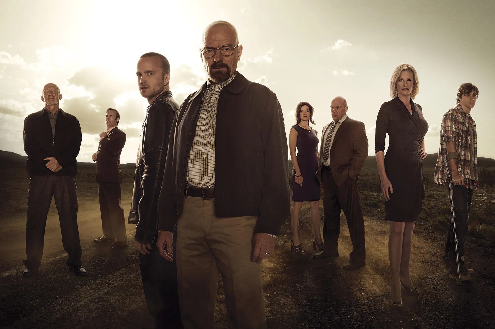

Created by: Vince Gilligan
Original run: 2008 – 2013
Genre: Crime, Drama, Thriller
Breaking Bad is an American television series that explores the descent of a mild-mannered chemistry teacher, Walter White, into the violent world of drug manufacturing and distribution. Faced with a terminal lung cancer diagnosis and mounting financial pressures, Walter partners with a former student, Jesse Pinkman, to produce and sell high-quality crystal methamphetamine. What begins as a desperate act of survival quickly evolves into a dark transformation driven by pride, ego, and power.
The series is a complex character study wrapped in a narrative that delves into morality, identity, consequence, and the human capacity for transformation. Walter White's journey from a sympathetic protagonist to a morally bankrupt antihero serves as the show's centerpiece.
Themes of duality, secrecy, addiction, family, and the corrupting influence of ambition are interwoven throughout the series. The story examines how far someone will go to protect those they love—or to preserve their own legacy.
Walter White (Bryan Cranston): A brilliant but underachieving chemistry teacher turned meth kingpin. His evolution is the crux of the narrative.
Jesse Pinkman (Aaron Paul): A former student and small-time drug dealer who becomes Walter’s partner and emotional counterbalance.
Skyler White: Walter’s wife, whose suspicions and involvement gradually deepen as the truth emerges.
Hank Schrader: Walter’s brother-in-law and a DEA agent, whose hunt for Heisenberg adds tension and dramatic irony.
Widely considered one of the greatest television series of all time, Breaking Bad received universal acclaim for its writing, acting, cinematography, and moral complexity. It won numerous awards, including 16 Primetime Emmy Awards. Bryan Cranston’s portrayal of Walter White is often hailed as one of television’s most iconic performances.
"I am not in danger, Skyler. I am the danger. A guy opens his door and gets shot and you think that of me? No. I am the one who knocks."
The impact of Breaking Bad continues to resonate through modern television storytelling. Its prequel series, Better Call Saul, deepened the universe while maintaining its standard of quality. Through its complex narrative and unflinching moral descent, Breaking Bad redefined what TV drama could be.
 
